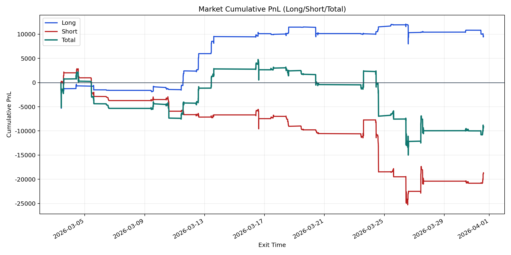
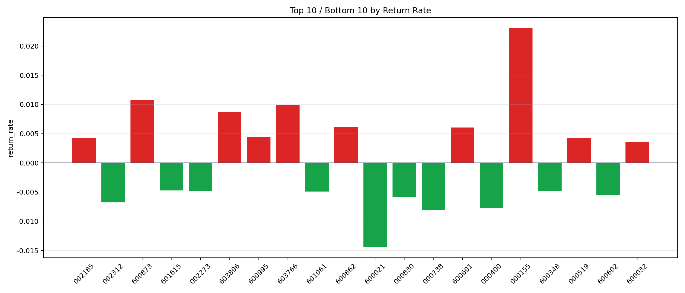

| repo_root | /home/haoranyou/data/output/alpha0.4_1w_5s_3ticks_index_filter/index_weights_500 |
|---|---|
| period_months | 1 |
| period_label | 2026-03-03_to_2026-03-31 |
| start_time | 2026-03-03 09:53:02 |
| end_time | 2026-03-31 14:45:02 |
| n_trades | 4638 |
| n_symbols | 89 |
| total_pnl | -9097.676849999989 |
| long_total_pnl | 9608.055199999984 |
| short_total_pnl | -18705.732049999973 |
| total_entry_notional | 43325365.0 |
| long_entry_notional | 10195488.0 |
| short_entry_notional | 33129877.0 |
| total_return_rate | -0.0002099850018574567 |
| long_return_rate | 0.0009423830619976194 |
| short_return_rate | -0.0005646182160591774 |
| top_symbols_by_return | ["000155", "600873", "603766", "603806", "600862", "600601", "600995", "002185", "000519", "600032"] |
| bottom_symbols_by_return | ["600021", "000738", "000400", "002312", "000830", "600602", "601061", "002273", "600348", "601615"] |

